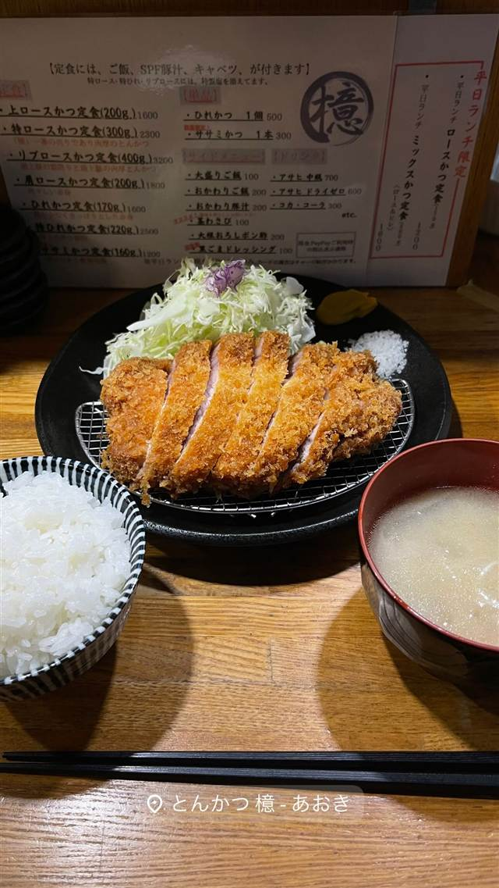

とんかつの店 馬酔木（あしび）
杜仲高麗豚を使った厚切りロースかつ、食べログ神奈川で上位常連
とんかつの店 馬酔木
横浜市都筑区、都筑ふれあいの丘駅近くで2005年から続くとんかつ専門店。杜仲高麗豚など厳選した豚肉を使った厚切りロースかつが評判で、食べログの神奈川とんかつランキングでも上位の常連。
TRIVIA
へえ、という話
- 屋号『馬酔木（あしび）』は、馬が木の香りに酔ったという故事に由来し、古典文学では『繁栄』を意味する枕詞としても使われる言葉
| 創業 | 2005年開業 |
|---|---|
| 看板 | 厚切りロースかつ定食（ランチ1,300円） |
| こだわり | 杜仲高麗豚など全国から厳選した豚肉を使用 |
| 掲載・受賞 | 食べログ神奈川県とんかつジャンルで上位常連 |
| 予算 | 昼 ¥1,000～¥1,999 夜 ¥2,000～¥2,999 |
| 場所 | 都筑ふれあいの丘駅 神奈川県横浜市都筑区高山14-5 |
食べたもの：とんかつ定食
NEARBY
近い店・同じ系統の店
-
 とんかつ 大手町駅(C7出口)
とんかつ まるや 大手町ビル店
『日本一のとんかつ屋』を掲げる、低価格高品質のとんかつ定食
昼 ～¥999 夜 ¥1,000～¥1,999
とんかつ 大手町駅(C7出口)
とんかつ まるや 大手町ビル店
『日本一のとんかつ屋』を掲げる、低価格高品質のとんかつ定食
昼 ～¥999 夜 ¥1,000～¥1,999
-
 とんかつ 両国
とんかつ はせ川 両国店
大門の名店『むさしや』仕込み、三元豚のとんかつがビブグルマン4年連続
とんかつ 両国
とんかつ はせ川 両国店
大門の名店『むさしや』仕込み、三元豚のとんかつがビブグルマン4年連続
-
 とんかつ 旭橋駅
豚々ジャッキー
あぐー豚とやんばる島豚だけを使うとんかつ、引き戸の奥の隠れ家
とんかつ 旭橋駅
豚々ジャッキー
あぐー豚とやんばる島豚だけを使うとんかつ、引き戸の奥の隠れ家
-
 とんかつ 赤坂見附
イマカツ 赤坂店
ささみかつが看板の、油と衣と火入れにこだわる平成のとんかつ
昼 ¥1,000～¥1,999 夜 ¥2,000～¥2,999
とんかつ 赤坂見附
イマカツ 赤坂店
ささみかつが看板の、油と衣と火入れにこだわる平成のとんかつ
昼 ¥1,000～¥1,999 夜 ¥2,000～¥2,999
-

とんかつ 麻布十番 とんかつ 檍 - あおき -
 とんかつ 表参道駅
とんかつ まい泉 青山本店
隣の銭湯「神宮湯」を譲り受けた建物で味わう、まい泉パン粉のひれかつ
昼 ¥1,000～¥1,999 夜 ¥3,000～¥3,999
とんかつ 表参道駅
とんかつ まい泉 青山本店
隣の銭湯「神宮湯」を譲り受けた建物で味わう、まい泉パン粉のひれかつ
昼 ¥1,000～¥1,999 夜 ¥3,000～¥3,999